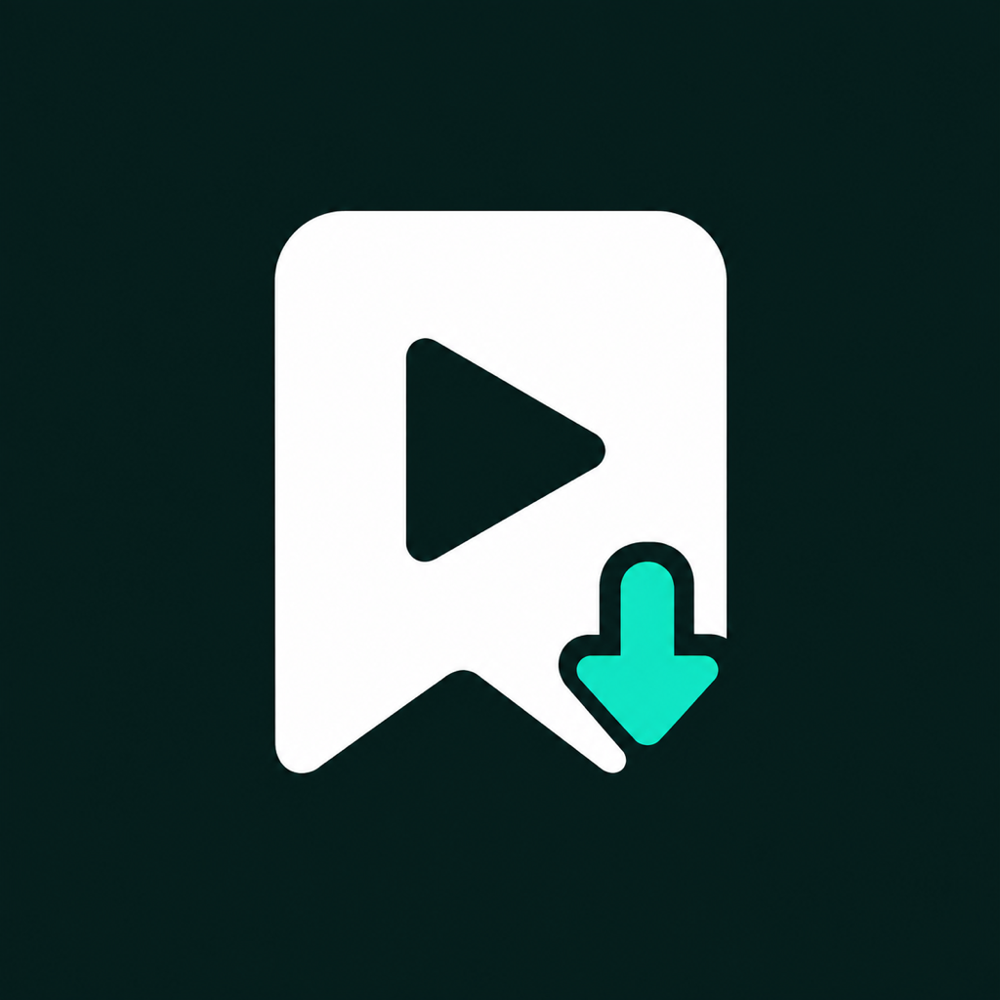

好视频，
留着再看。
松果收藏夹 - VidKeep，把分享链接、本地视频和你的学习笔记整理在一起。
收藏，然后真正用起来
- 主动粘贴或系统分享导入链接，默认未分类。
- 按自己的分类整理，用标题、作者和笔记找回内容。
- 本地视频离线播放，保存观看进度和时间点笔记。
- 支持的抖音公开合集先选集，再按原集号保存，复用已有下载、补齐缺集。
- 私密收藏使用独立的 6 位数字密码，可选 Face ID / Touch ID 快捷解锁。
- 导出普通收藏备份，包含普通视频、分类和笔记，不包含私密内容和未完成的合集下载队列。
来源支持，清楚说明
支持收藏抖音、B站等平台的链接，公开作品可尝试下载到本机，成功后即可离线观看。各来源支持范围、清晰度和后台传输限制见 App 内“链接来源支持”。请仅下载自己拥有或获准保存的内容。来源平台上的私密、需登录、付费、受限或需要验证的作品不支持。抖音公开合集仅在可取得完整目录时提供选集下载，不代表支持所有平台的播放列表。获取目录和解析视频时请保持 App 在前台；每个视频分别计入每日下载额度。也可以导入本地视频离线观看。
免费开始，按需升级
收藏链接不限数量，每天可免费下载 5 个视频。Pro 提供月订阅和年订阅，在有效期间下载不限次数；一次性买断也提供相同权益，不自动续费。已有内容在订阅到期后仍可播放、整理和导出。可购买方案和正式价格以 App Store 购买页为准，不包含云存储。
Your videos, kept together.
Save video links, organize local videos and revisit useful moments with timestamped notes. Save as many links as you like and download 5 videos a day for free; monthly and annual Pro subscriptions remove the daily download limit. A one-time Lifetime purchase offers the same benefit without renewal. Available plans and prices appear on the purchase screen. Existing content remains accessible after a subscription expires.
Public videos from TikTok, YouTube and other supported platforms can be downloaded to your device when available (YouTube up to 1080p). Completed downloads play offline. See Supported Sources in the app for quality and background transfer limits. Only save videos you own or have permission to download. For supported public Douyin collections, load the complete directory and choose episodes before downloading. Episodes are saved in source order, existing downloads are reused, and missing episodes and failures can be retried. Selections and task progress survive app restarts. Keep the app open while loading directories and resolving videos; each video counts separately toward the daily allowance. This feature does not include other platforms’ playlists. Private, sign-in-only, paid, restricted and verification-required works are unsupported. Import local files for offline playback too. Check the in-app source support list before purchasing.
Private Collection uses a separate 6-digit PIN, with optional Face ID or Touch ID, and keeps private items out of ordinary browsing and search. It locks when closed or when the app enters the background. The device passcode cannot replace this PIN. This is in-app access protection, not separate file encryption. Ordinary backups exclude private content and unfinished collection queues; external copies and system backups are outside the PIN’s protection.